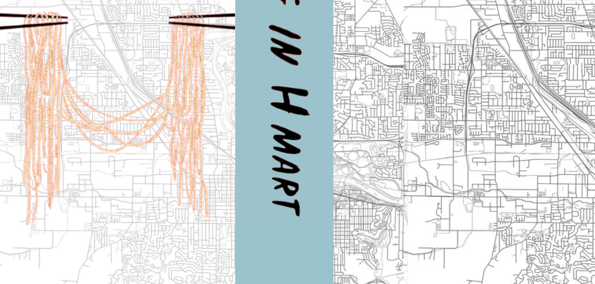
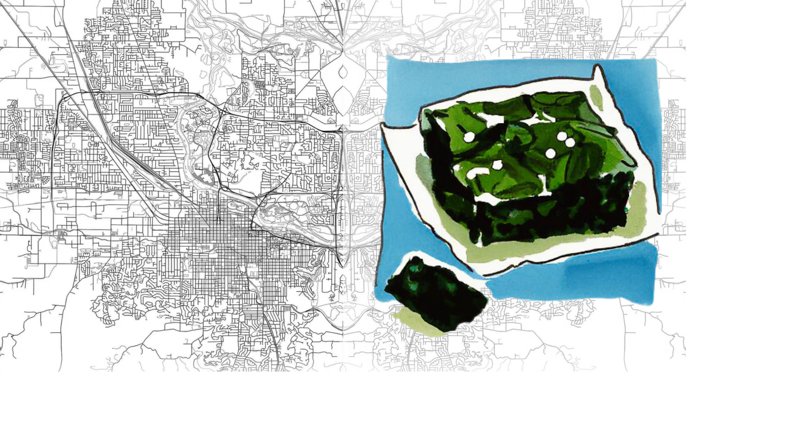

“Am I even Korean anymore if there's no one left in my life to call and ask which brand of seaweed we used to buy?”
Cooking my mother's food had come to represent an absolute role reversal, a role I was meant to fill. Food was an unspoken language between us, had come to symbolize our return to each other, our bonding, our common ground.